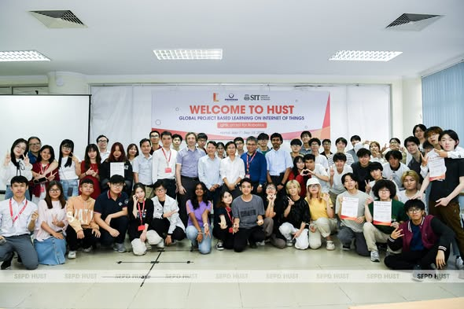

gPBL 2022 - 2026
HÀNH TRÌNH VƯƠN RA THẾ GIỚI CỦA SINH VIÊN CÔNG NGHỆ GIÁO DỤC
Trong những năm gần đây, quốc tế hóa đã trở thành một trong những định hướng chiến lược của Khoa Khoa học và Công nghệ Giáo dục (FED) – Đại học Bách khoa Hà Nội. Nổi bật trong chuỗi hoạt động đó là chương trình Global Project-Based Learning (gPBL) – Một sân chơi học thuật quốc tế giúp sinh viên được học tập, nghiên cứu và làm việc cùng bạn bè đến từ nhiều quốc gia trên thế giới. Từ những bước đi đầu tiên vào năm 2022 đến quy mô quốc tế ngày càng mở rộng vào năm 2026, gPBL đã trở thành một trong những dấu ấn đặc sắc nhất của sinh viên ngành Công nghệ Giáo dục (ED2).
.png)
TỪ MỘT CHƯƠNG TRÌNH TRAO ĐỔI ĐẾN MẠNG LƯỚI HỌC TẬP TOÀN CẦU
Năm 2022 đánh dấu lần đầu tiên sinh viên Công nghệ Giáo dục tham gia chương trình Global Project-Based Learning phối hợp cùng Học viện Công nghệ Shibaura (SIT) – Nhật Bản. Chương trình quy tụ sinh viên, học viên cao học và nghiên cứu sinh đến từ nhiều quốc gia như Nhật Bản, Trung Quốc, Ấn Độ, Philippines, Iran, Malaysia và Đài Loan. Các nhóm sinh viên quốc tế cùng nhau giải quyết những vấn đề thực tiễn trong giáo dục, nông nghiệp, sản xuất và nâng cao chất lượng cuộc sống thông qua công nghệ IoT.
Không chỉ học tập, sinh viên còn được rèn luyện kỹ năng làm việc nhóm, tư duy phản biện, thuyết trình bằng tiếng Anh và giao tiếp trong môi trường đa văn hóa. Đây cũng là lần đầu tiên nhiều sinh viên ED2 được trực tiếp làm việc với bạn bè quốc tế, mở ra những cơ hội học tập và nghiên cứu sau này.
Xem thêm.jpg)
.jpg)
.jpg)
CHƯƠNG TRÌNH TRAO ĐỔI TẠI VIỆN CÔNG NGHỆ SHIBAURA (SIT)
Sau chương trình gPBL, đã có 5 sinh viên đến từ các trường đối tác được lựa chọn sang Viện Công nghệ Shibaura (Shibaura Institute of Technology - SIT, Nhật Bản) để tham gia các hoạt động nghiên cứu tại các phòng thí nghiệm của trường.
Đặc biệt, hai sinh viên Trần Bích Loan và Ngụy Thị Lan Anh (K65 ngành Công nghệ Giáo dục, Viện Sư phạm Kỹ thuật) đã xuất sắc được SIT chấp nhận và trao học bổng tham gia Research Exchange Program. Chương trình kéo dài 6 tháng, bắt đầu từ tháng 3/2023, mang đến cơ hội nghiên cứu và học tập trong môi trường quốc tế, đồng thời mở rộng năng lực chuyên môn và giao lưu học thuật với các nhà nghiên cứu, sinh viên đến từ nhiều quốc gia.
Xem thêm.png)
.png)
.png)
GLOBAL PROJECT-BASED LEARNING ON INTERNET OF THINGS 2023
Tiếp nối thành công năm đầu tiên, gPBL 2023 được tổ chức với chủ đề “gPBL on IoT for Robotics”. Quy mô chương trình tăng lên với khoảng 60 sinh viên và nghiên cứu sinh tham gia. Các nhóm dự án tập trung nghiên cứu các giải pháp IoT ứng dụng trong robot và tự động hóa, đồng thời trải nghiệm nhiều hoạt động giao lưu học thuật và văn hóa.
Không chỉ học tập, sinh viên còn được rèn luyện kỹ năng làm việc nhóm, tư duy phản biện, thuyết trình bằng tiếng Anh và giao tiếp trong môi trường đa văn hóa. Đây cũng là lần đầu tiên nhiều sinh viên ED2 được trực tiếp làm việc với bạn bè quốc tế, mở ra những cơ hội học tập và nghiên cứu sau này.
Xem thêm
.png)
.png)
gPBL2024 SHIBAURA INSTITUTE OF TECHNOLOGY (芝浦工業大学)
Năm 2024, lần đầu tiên chương trình được tổ chức tại Học viện Công nghệ Shibaura, Nhật Bản và có thêm sự tham gia của Mingchi University of Technology (Đài Loan) và University of Tun Hussein Onn (Malaysia).
10 ngày tại Nhật Bản từ 25/02/2024 đến ngày 05/03/2024, các bạn sinh viên được học tập và giao lưu văn hoá quốc tế, đồng thời phát triển các kỹ năng nghề nghiệp thực tế bằng hình thức học tập thông qua dự án. gPBL2024 đã mang đến cho các bạn sinh viên Công nghệ giáo dục những trải nghiệm quý báu với môi trường học tập hiện đại tại SIT, học tập và nghiên cứu xây dựng ý tưởng và thiết kế các dự án theo các nhóm chủ đề:
- Internet vạn vật ứng dụng trong Y tế (IoT for Health)
- Internet vạn vật ứng dụng trong Nông nghiệp (IoT for Agriculture)
- Internet vạn vật ứng dụng trong việc nâng cao chất lượng cuộc sống và giáo dục (IoT for Quality of Life and Education)
- Internet vạn vật ứng dụng trong Môi trường (IoT for Environment)
Chính từ những trải nghiệm này, nhiều sinh viên chia sẻ rằng gPBL đã giúp các em trưởng thành hơn, tự tin hơn và có định hướng rõ ràng hơn cho con đường học tập, nghiên cứu trong tương lai.
Xem thêm.png)
.png)
.png)
CHIA SẺ ĐẾN TỪ SINH VIÊN THAM GIA
HÀNH TRÌNH GPBL 2024 🇯🇵
"Một chuyến đi nhiều giá trị và kiến thức 😊
✈️ Hơn 10 ngày tại Nhật Bản trôi qua rất nhanh, bên cạnh những trải nghiệm về văn hóa, con người, môi trường nơi đây là những cơ hội kết thêm những người bạn mới, học hỏi những kiến thức và những bài học giá trị cuộc sống.
P/s: Điều thú vị nhất sau chuyến đi đó chính là mình nhận thấy được các bạn người Malaysia có một tâm thế rất tích cực, một năng lượng hạnh phúc ^^. Lúc nào cũng trong sự sẵn sàng, chia sẻ và nói chuyện rất vui vẻ. Rất đáng iu
❤️ Em xin chân thành cảm ơn Khoa Khoa Học Và Công Nghệ Giáo Dục - Đại học Bách Khoa Hà Nội đã tạo điều kiện cho em được tham gia học tập và Shibaura Institute of Technology (芝浦工業大学) - Học viện Công nghệ Shibaura đã tổ chức một chương trình thành công và ý nghĩa."
Xem thêm.png)
GPBL ON SENSOR-DRIVEN TECHNOLOGY AND APPLICATIONS 2024
Tiếp nối thành công từ các mùa gPBL trước, chương trình Global Project-Based Learning (gPBL) 2024 với chủ đề “Sensor-Driven Technology and Applications” đã diễn ra từ ngày 05–15/09/2024 với sự tham gia của sinh viên đến từ Khoa Khoa học và Công nghệ Giáo dục – Đại học Bách khoa Hà Nội, Học viện Công nghệ Shibaura (SIT) – Nhật Bản, Trường Đại học Phenikaa, Trường Đại học FPT và Đại học Kinh tế TP. Hồ Chí Minh (UEH).
Từ ngày 05/09 đến ngày 14/09/2024 diễn ra chương trình, các sinh viên đã có cơ hội tham gia nhiều hoạt động thiết thực, từ thảo luận chuyên sâu đến triển khai các dự án IOT liên quan đến các lĩnh vực như Agriculture, Industrial,... Bên cạnh đó là chuyến đi tham quan Vịnh Hạ Long, tìm hiểu văn hóa, phong tục Việt Nam và các hoạt động giao lưu thể thao, hoạt động nhóm giữa các bạn sinh viên. Qua đó, sinh viên không chỉ rèn luyện kỹ năng tìm tòi, phân tích, làm việc nhóm mà còn phát triển khả năng thuyết trình và nâng cao trình độ ngoại ngữ, mở rộng cơ hội học hỏi và kết nối toàn cầu.
Xem thêm.png)
.png)
"Global Project-Based Learning (gPBL) on IoT in the era of LLMs"
Chương trình Học qua dự án với chủ đề Ứng dụng Internet vạn vật trong Kỷ nguyên Mô hình Ngôn ngữ lớn - 2025
Năm 2025, gPBL bước sang một giai đoạn mới với chủ đề “IoT in the Era of LLMs” và trí tuệ nhân tạo thế hệ mới (LLMs), giải quyết các bài toán về giáo dục, năng lượng, giao thông, môi trường và đời sống. Chương trình quy tụ gần 80 sinh viên, học viên cao học và giảng viên từ 7 trường đại học tại Việt Nam, Nhật Bản, Malaysia và Đài Loan. Chương trình hướng tới mục tiêu mở rộng cơ hội giao lưu quốc tế và trao đổi học thuật cho sinh viên.
Diễn ra từ ngày 26/08 đến 05/09/2025, ngoài những buổi thảo luận học thuật, trao đổi chuyên đề, các bạn sinh viên và nghiên cứu sinh sẽ được tham gia nhiều hoạt động trải nghiệm đa dạng: một ngày khám phá Đại học Bách khoa Hà Nội, dự lễ diễu binh kỷ niệm Quốc khánh 02/09, chuyến tham quan Vịnh Hạ Long, tìm hiểu nét đẹp văn hóa – phong tục Việt Nam, cùng với các hoạt động giao lưu thể thao và làm việc nhóm đầy sôi động.
gPBL 2025 cũng khẳng định vị thế của FED trong mạng lưới hợp tác quốc tế khi liên tục mở rộng số lượng đối tác và cơ hội trao đổi học thuật cho sinh viên.
Xem thêm.png)
.png)
Global Project-Based Learning 2026 - Multidisciplinary Innovation for Sustainable Future
Năm 2026 gPBL đã trở thành diễn đàn học thuật quốc tế với sự góp mặt của các trường đại học đến từ Nhật Bản, Đài Loan, Thái Lan, Ấn Độ, Ý và Việt Nam. Chủ đề năm 2026 là “Multidisciplinary Innovation for Sustainable Future”, hướng đến các giải pháp liên ngành cho phát triển bền vững toàn cầu.
Hơn 70 sinh viên quốc tế cùng làm việc trong các nhóm đa quốc gia, đa lĩnh vực để giải quyết những thách thức về môi trường, giáo dục và xã hội. Các dự án không chỉ được đánh giá bởi giảng viên các trường đối tác mà còn nhận phản biện trực tiếp từ các chuyên gia quốc tế. Trong khuôn khổ chương trình đoàn sinh viên Khoa Khoa học và Công nghệ Giáo dục đã tham gia buổi Workshop đặc biệt về Yukata - trang phục truyền thống đặc trưng của xứ sở hoa anh đào. Tại đó, các bạn sinh viên không chỉ được cung cấp những kiến thức chuyên sâu về nguồn gốc, ý nghĩa lịch sử của Yukata qua các thời kỳ, mà còn trực tiếp thực hành cách mặc trang phục đúng chuẩn dưới sự hướng dẫn của các bạn Sinh viên SIT.
Đặc biệt, sinh viên ED2 còn nhận được nhiều cơ hội học bổng trao đổi tại Nhật Bản, tham gia nghiên cứu cùng các giáo sư quốc tế và mở rộng mạng lưới học thuật trên toàn thế giới.
Xem thêm.png)
.png)
CHIA SẺ ĐẾN TỪ SINH VIÊN THAM GIA
HÀNH TRÌNH GPBL 2026 🇯🇵
✈️ Gói ghém lại hành trình gPBL 2026 tại Shibaura Institute of Technology (SIT), Tokyo, Nhật Bản 🇯🇵
Hơn cả một chuyến đi, đây là những ngày mình được học cách tư duy, làm việc nhóm xuyên quốc gia và trực tiếp trải nghiệm môi trường công nghệ tại Nhật Bản. Từ những giờ thảo luận căng thẳng đến những phút giây cùng bạn bè khám phá Tokyo, mỗi khoảnh khắc đều là một bài học vô giá cho hành trình nghiên cứu và phát triển bản thân.
Em cảm ơn Khoa Khoa Học Và Công Nghệ Giáo Dục - Đại học Bách Khoa Hà Nội, cảm ơn Shibaura Institute of Technology. Em cảm ơn thầy cô, đã trao cơ hội cho em được tham gia chương trình.
Cảm ơn HUST, SIT, cảm ơn những người bạn đồng hành đã tạo nên một chương đáng nhớ trong quãng đời sinh viên tại HUST. 🇻🇳🇯🇵
.png)
| Viết cho Global Project Based Learning 2 0 2 6 |
Global Project Based Learning 2026 đã khép lại sau những ngày học tập và trải nghiệm đáng nhớ. Nhìn lại chặng đường vừa qua, với bản thân em đó không chỉ là khoảng thời gian tham gia một dự án quốc tế, mà còn là dịp để gặp gỡ, học hỏi, mở rộng góc nhìn và bước ra khỏi vùng an toàn của bản thân. gPBL không còn là một hành trình ngắn, mà còn trở thành một dấu mốc đặc biệt trong những năm tháng sinh viên của em.
Em xin chân thành cảm ơn Khoa Khoa Học Và Công Nghệ Giáo Dục - Đại học Bách Khoa Hà Nội, Shibaura Institute of Technology (芝浦工業大学), các thầy, cô đã cho em cơ hội được vươn ra biển lớn
After climbing a great hill, one only finds that there are many more hills to climb.
.png)
✈️ GPBL – HÀNH TRÌNH VẪN ĐANG TIẾP TỤC
Từ 32 sinh viên của năm 2022 đến hơn 70 sinh viên quốc tế năm 2026, từ một chương trình hợp tác giữa các trường đại học đến mạng lưới học thuật đa quốc gia, gPBL đã chứng minh sức hút và giá trị thực tiễn của mình. Chương trình không chỉ mang đến kiến thức chuyên môn mà còn giúp sinh viên phát triển kỹ năng ngoại ngữ, kỹ năng nghiên cứu, khả năng làm việc toàn cầu và tư duy đổi mới sáng tạo.
Quan trọng hơn, gPBL không dừng lại ở năm 2026. Với mạng lưới đối tác quốc tế ngày càng mở rộng và số lượng sinh viên tham gia ngày càng tăng, hành trình quốc tế hóa của sinh viên Công nghệ Giáo dục sẽ còn tiếp tục trong những năm tới. Những chuyến đi tới Tokyo, Kuala Lumpur, Đài Bắc, Bangkok hay thậm chí các trường đại học châu Âu hoàn toàn có thể trở thành cơ hội dành cho thế hệ sinh viên tiếp theo.
.png)
Vậy còn chần chờ gì nữa?
Nếu bạn mong muốn được học tập trong môi trường hiện đại, làm việc cùng bạn bè quốc tế, tham gia các dự án công nghệ thực tế, nhận học bổng trao đổi nước ngoài và xây dựng hành trang cho công dân toàn cầu, thì ngành Công nghệ Giáo dục (ED2) – Đại học Bách khoa Hà Nội chính là nơi để bắt đầu. gPBL đã mở ra cánh cửa thế giới cho hàng trăm sinh viên FED trong suốt 5 năm qua. Và biết đâu, người tiếp theo đặt chân tới Nhật Bản, Malaysia, Đài Loan hay những trung tâm công nghệ hàng đầu thế giới sẽ chính là bạn.
- 🚀 Đăng ký ngay nguyện vọng ED2 – Công nghệ Giáo dục
- 🌎 Học tập toàn cầu – Trải nghiệm quốc tế – Kiến tạo tương lai
- ✨ Cùng FED viết tiếp hành trình gPBL những năm tiếp theo!